歷屆試題
看答案與詳解收起
答(D) 2.5
解這題在考什麼：速率＝距離 ÷ 時間，注意單位換算。
- 範圍：中洋脊單邊約 100 公里＝10,000,000 公分（10⁷ cm）。
- 這 100 公里的海床是 400 萬年內生成的（圖上最老處＝4 百萬年）＝4,000,000 年。
- 速率＝10⁷ cm ÷ 4×10⁶ 年 ＝ 2.5 公分／年 ⇒ (D)。
看答案與詳解收起
答(B) 40 萬
解這題在考什麼：數圖中顏色轉換的次數＝地磁反轉次數。
- 圖中一側 0～4 百萬年內，顏色（橘黃／淡藍）共轉換約 10 次。
- 平均每隔 400 萬年 ÷ 10 ＝ 40 萬年反轉一次 ⇒ (B)。
看答案與詳解收起
答(A) 與地球自轉相同
解這題在考什麼：地磁倒轉與外核電流方向（右手安培定則）。
- 圖中淡藍色條紋＝與現在地磁方向相反；150 萬年前（1～2 百萬年之間）對應的是淡藍色條紋 ⇒ 當時是反磁場。
- 現今（正磁場）：地磁 S 極在北、N 極在南，外核電流（由北極上方俯視）約為順時針，與地球自轉（逆時針）相反。
- 反磁場時期，電流方向反過來＝逆時針＝與地球自轉相同 ⇒ (A)。
看答案與詳解收起
答(A) 火成岩
解這題在考什麼：火山噴出的岩漿冷卻形成的岩石 ⇒ 火成岩（玄武岩質）。
看答案與詳解收起
答(E) 地函
解這題在考什麼：地球各層的體積：地函最大（約占地球體積八成以上）。
- 夏威夷群島、鏈狀火山島嶼：只是地表小小的島。
- 地殼最薄（最小）、太平洋板塊＝岩石圈（地殼＋上部地函）。
- 整個地球體積最大的是 地函 ⇒ (E)。
看答案與詳解收起
答(D) 不位於板塊交界處
解這題在考什麼：熱點火山位於板塊內部。
- 夏威夷是熱點火山：地函熱柱位置固定，板塊在上方移動形成火山島鏈。
- 夏威夷在太平洋板塊中間，並不在張裂、聚合或錯動型板塊邊界 ⇒ (D)。
看答案與詳解收起
答(C)
解這題在考什麼：離熱點愈遠，火山愈老。
- 夏威夷主島（1）在熱點上＝最年輕；往鏈狀的 2、3、4 愈來愈遠 ⇒ 愈來愈老。
- 橫軸 4→3→2→1：年齡由老（高）逐漸降到年輕（低） ⇒ 一條下降直線＝(C)。
看答案與詳解收起
答(C)
解這題在考什麼：菲律賓海板塊往北隱沒到歐亞板塊之下（琉球海溝），震源由海溝往島弧方向愈來愈深。
- 臺灣東北側：板塊交界（粗實線＝琉球海溝）在南，震源在交界北側。
- 靠近交界處＝淺源（小點）；離交界愈往北＝愈深（大點）。
- (C) 圖符合：靠線處是小點（淺源），線的北側逐漸變成大點（深源）。(D) 剛好相反（靠線處最深）；(A)(B)(E) 的分布位置與深度趨勢都不符。
看答案與詳解收起
答(A)
解這題在考什麼：車籠埔斷層位於臺灣西部，是歐亞板塊內部的斷層。
- 921 的逆斷層是菲律賓海板塊與歐亞板塊相互擠壓造成，但斷層位置在歐亞板塊上。
- 甲、乙、丙、丁四地都在同一側（臺灣中部），都在歐亞板塊 ⇒ (A)。（菲律賓海板塊與歐亞板塊的縫合線是更東邊的花東縱谷。）
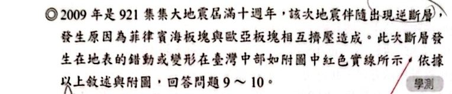
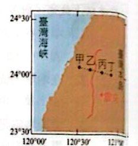
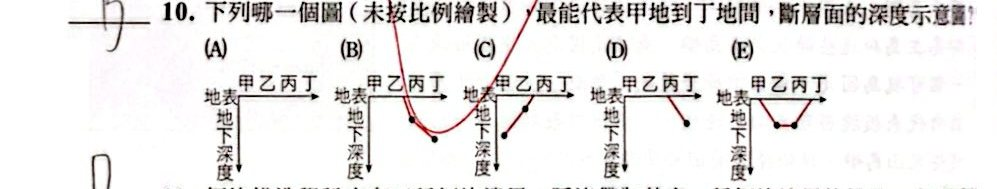
看答案與詳解收起
答(B)
解這題在考什麼：逆斷層的斷層面是傾斜的；車籠埔斷層面往東傾斜，所以愈往東斷層面愈深。
- 斷層的地表位置在乙、丙之間；甲、乙在斷層西側（下盤），下方沒有斷層面。
- 丙在斷層面剛過地表的上盤處，斷層面較淺；丁在更東邊，斷層面更深。
- 圖形：丙處斷層面淺、丁處更深（往東愈來愈深）⇒ (B)。
看答案與詳解收起
答(D)
解這題在考什麼：隱沒帶＝聚合型板塊邊界，一個板塊（岩石圈）往下隱沒到地函。（講義掃描右側被截，只能看到部分選項，以下依可辨識內容說明。）
- (A) ✗ 隱沒帶附近的海洋地殼是老的（老的、密度大的海洋岩石圈才容易隱沒），比中洋脊附近的老。
- (B) ✗ 隱沒帶附近有海溝、火山、複雜構造，並非密度最均勻處。
- (C) ✗ 隱沒帶是聚合型邊界，不是張裂型。
- (D) ○ 岩石圈被帶至隱沒帶深處（隱沒入地函）。
- (E) ✗ 隱沒帶地震產生的地震波會向四面八方傳遞，不是只傳向地心。
看答案與詳解收起
答(B) 地殼緩慢抬升
解這題在考什麼：海蝕洞與藤壺在潮間帶生長，現在卻在離海平面約 3 公尺處。
- 現生藤壺只在潮間帶，且潮差不超過 1 公尺 ⇒ 這群化石原本在海平面附近。
- 現在高出海平面約 3 公尺，而化石帶寬度只有 50 公分（慢慢累積）⇒ 是長時間緩慢抬升，不是海嘯、地震的瞬間作用（那會是亂堆、不會形成帶狀）。
- 臺灣東部因板塊擠壓，地殼持續抬升 ⇒ (B)。
看答案與詳解收起
答(A)(D)
解這題在考什麼：看GPS 同震變形圖判斷斷層與隱沒方向。
- (A) ○ 日本海溝處太平洋板塊往西隱沒到北美洲板塊（日本本島）之下，是逆斷層活動（逆衝型地震）。
- (B) ✗ 同震沉降只是上盤的一部分變形，不能因此判斷是正斷層；日本海溝的地震發生在隱沒帶界面，是逆衝型斷層（逆斷層）。
- (C) ✗ 水平位移大多向東，是島上（上盤）彈向海溝，所以是太平洋板塊向西隱沒到北美洲板塊之下，不是北美洲板塊隱沒。
- (D) ○ 如上。
- (E) ✗ 島上最大水平同震位移約 數公尺（圖例 50 cm 的箭頭，最大約為其 10 倍），遠小於 15 公尺。
看答案與詳解收起
答(E)
解這題在考什麼：地殼厚度分布：海洋地殼薄（約 7 km）、大陸地殼厚（約 35 km），高山下的地殼最厚（約 60～70 km）。
- (A) ○ 海洋地殼大都比大陸地殼薄。
- (B) ○ 地殼厚度大都小於 45 公里。
- (C) ○ 地勢高的區域（高山），地殼大多較厚。
- (D) ○ 各地地殼厚度不同，莫氏面深度也就不一樣。
- (E) ✗ 要鑽探取得上部地函物質，應選擇地殼最薄的海洋地區；北緯 10 度、東經 15 度在非洲大陸內部（地殼厚），不是最佳地點。
看答案與詳解收起
答(D)
解這題在考什麼：地震深度與板塊邊界類型。
- 隱沒帶（例：印尼）：板塊向下隱沒，淺、中、深源地震都有。
- 中洋脊（例：冰島）：張裂型，岩石圈薄而熱，以淺源地震為主。
- 所以：隱沒帶淺、中、深源都有，中洋脊以淺源為主 ⇒ (D)。
看答案與詳解收起
答(B) 玄武岩
解這題在考什麼：海洋地殼的組成＝玄武岩質。
- 菲律賓海板塊的岩石（海岸山脈的原屬海洋地殼）是玄武岩。
- 花岡岩＝大陸地殼；板岩、片岩、大理岩＝變質岩。
看答案與詳解收起
答(D) 右移斷層
解這題在考什麼：平移斷層的判斷：站在其中一塊，看對面那一塊往哪個方向移動。
- 斷層面南北延伸、垂直地面；志明的房子在東邊，鳳英的房子在西邊。
- 志明站在東邊面向西（看向鳳英），北方在他的右手邊。
- 鳳英的房子相對志明往北移動＝往右移動 ⇒ 右移斷層。
- 轉形斷層必須是板塊邊界，題目沒有這個資訊，所以選(D)。
看答案與詳解收起
答(A)(B)
解這題在考什麼：大陸地殼 vs 海洋地殼。
- (A) ○ 大陸地殼較厚（約 35 km，海洋約 7 km）。
- (B) ○ 大陸地殼密度較小（花岡岩質），海洋地殼密度較大（玄武岩質）。
- (C) ✗ 剛好相反：大陸地殼為矽鋁質（花岡岩），海洋地殼為矽鎂質（玄武岩）。
- (D) ✗ 目前發現最老的海洋地殼只有約 1.8 億年（會隱沒、更新），不是 40 億年。
- (E) ✗ 海洋地殼主要是火成岩（玄武岩）。
看答案與詳解收起
答(A)
解這題在考什麼：月球岩石全是火成岩、幾乎沒有水 ⇒ 表面曾經熔融。
- (A) ○ 全是火成岩，沒有沉積岩或變質岩 ⇒ 月球表面曾經處於熔融狀態（岩漿海）。
- (B) ✗ 沒有證據顯示沉積岩、變質岩埋在深處。
- (C) ✗ 月球坑洞大多是隕石撞擊造成，不是火山口。
- (D) ✗ 沒有證據顯示曾有大量流水。
- (E) ✗ 月球沒有明顯的板塊運動；高地與月海是撞擊與熔岩造成。
看答案與詳解收起
答(B)(E)
解這題在考什麼：車籠埔斷層是逆斷層，斷層面向東傾，上盤（東側）往上、往西逆衝。
- (B) ○ 車籠埔斷層為逆斷層（受板塊擠壓）；(A)(C) ✗。
- 逆斷層的上盤被抬高：相片中河堤（左側）較高、河灘（右側）較低，所以上盤在左側 ⇒ (E) ○，(D) ✗；(F) ✗（上下盤可以判斷）。
看答案與詳解收起
答(C)(E)
解這題在考什麼：中酸性岩漿黏滯性大、爆發猛烈；火山監測。
- (A) ✗ 圖中爆發時間不規則，沒有特定週期。
- (B) ✗ 維蘇威主要是中酸性（安山岩質），不是玄武岩（黏滯性小）。
- (C) ○ 可以由排出氣體的量與成分變化監測火山爆發。
- (D) ✗ 維蘇威是中酸性岩漿的猛烈爆發；澎湖是玄武岩質的寧靜式噴發，形式不同。
- (E) ○ 圖中 1600～2000 年的爆發線較前一千年密集。
看答案與詳解收起
答(C)(E)
解這題在考什麼：地球分層依密度排列：地核（金屬鐵鎳）＞ 地函（橄欖岩）＞ 海洋地殼（玄武岩）＞ 大陸地殼（花岡岩）。
- 所以：鐵隕石 ＞ 橄欖岩 ＞ 玄武岩 ＞ 花岡岩。
- (C) 橄欖岩 ＞ 玄武岩 ＞ 花岡岩 ○ (E) 鐵隕石 ＞ 橄欖岩 ＞ 花岡岩 ○。
- (A)(B)(D) 都有順序顛倒 ✗。
看答案與詳解收起
答(B)(D)
解這題在考什麼：用 GPS 箭頭判斷距離變化與變形類型（伸張／壓縮）。
- (A) ✗ 並非「所有」測站都向大陸靠近：測站 6、7 在北部，箭頭朝東南（遠離）。
- (B) ○ 測站 6 與 7 之間的距離加大 ⇒ 伸張變形（沖繩海槽張裂）。
- (C) ✗ 測站 4、5 分別在縱谷兩側，箭頭方向與大小相近，距離變化不大，不是以伸張變形為主。
- (D) ○ 測站 2、3 之間的距離減小 ⇒ 縱谷斷層以壓縮變形為主。
- (E) ✗ 臺灣東部與西部的變形差異明顯（東邊快、西邊慢）。
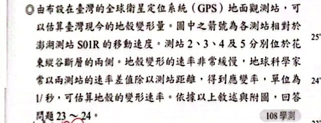
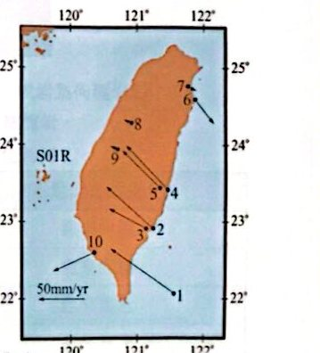
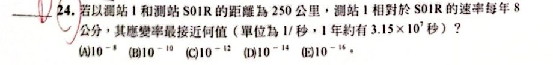
看答案與詳解收起
答(D) 10⁻¹⁴
解這題在考什麼：應變率＝速率差 ÷ 距離，注意單位換算（公分→公尺、年→秒）。
- 速率差 8 公分／年＝0.08 公尺／年；距離 250 公里＝250,000 公尺。
- 應變率＝0.08 ÷ 250,000 ＝ 3.2×10⁻⁷（1／年）。
- 1 年＝3.15×10⁷ 秒 ⇒ 3.2×10⁻⁷ ÷ 3.15×10⁷ ≈ 1×10⁻¹⁴（1／秒） ⇒ (D)。
看答案與詳解收起
答(E)
解這題在考什麼：臺灣兩條班尼奧夫帶的方向。
- 東北部外海（琉球）：菲律賓海板塊往北隱沒到歐亞板塊之下 ⇒ (B)(C) ✗（(B) 說成「逆衝到歐亞板塊上方」、(C) 方向相反）。
- 南半部（馬尼拉）：歐亞板塊往東隱沒到菲律賓海板塊之下 ⇒ (E) ○、(D)（說成逆衝到上方）✗。
- (A) ✗ 兩板塊不是僅互相錯動。
看答案與詳解收起
答(C)
解這題在考什麼：環太平洋地震帶＝火環。
- (A) ✗ 主要與聚合型（隱沒）板塊邊界有關。
- (B) ✗ 隱沒帶有淺、中、深源地震，不是只有淺源。
- (C) ○ 與環太平洋火山帶（火環）位置幾乎一致，有許多活火山。
- (D) ✗ 多半是逆斷層活動，不是平移斷層。
- (E) ✗ 臺灣是菲律賓海板塊與歐亞板塊相接，不是太平洋板塊。
關鍵考題
看答案與詳解收起
答(C)
解這題在考什麼：S 波速突變的位置＝不連續面；波速突降處＝軟流圈（低速帶）。
- 甲：地殼（厚約 10 公里，海洋）；乙：上部地函（較快的 S 波）；丙：軟流圈（波速變慢）。
- (A) ✗ 丙處波速降低，正是軟流圈（低速帶）；S 波在此沒消失，只是降速，不能因此說甲乙丙都不屬於軟流圈。
- (B) ✗ 甲乙交界之波速突然變快，是組成不同（地殼→地函，莫氏面），不是地溫驟增。
- (C) ○ 岩石圈＝地殼＋軟流圈之上的上部地函＝甲＋乙。
- (D) ✗ 甲是海洋地殼（約 7～10 公里），不是「一塊海洋岩石圈」（岩石圈約 65 公里）。
- (E) ✗ 丙處波速變慢是因為少部分熔融、塑性高，不是密度變小。
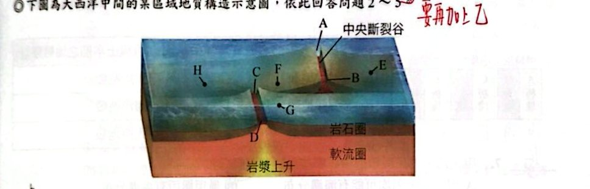
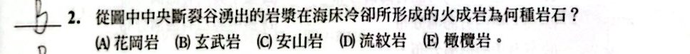
看答案與詳解收起
答(B) 玄武岩
解這題在考什麼：中洋脊＝張裂型板塊邊界，新生的海洋地殼為玄武岩質。
看答案與詳解收起
答(B)
解這題在考什麼：轉形斷層（BC 段）兩側是不同板塊，且各自遠離自己那一側的中洋脊。
- F、G 分別位於轉形斷層 BC 的兩側 ⇒ 屬於不同板塊。
- 兩塊板塊各自遠離所屬的那一段中洋脊，朝相反方向移動 ⇒ 兩點距離愈來愈遠。
- 所以選 (B)：不同板塊、愈來愈遠。
看答案與詳解收起
答(A) 均為正磁場
解這題在考什麼：地球磁場倒轉紀錄——現在（最新）形成的磁性礦物的磁化方向＝現今地磁方向（正磁場）。
- AB 段、CD 段都是目前才從中洋脊裂谷湧出、冷卻形成的新岩石 ⇒ 磁場方向與現在地磁同向＝均為正磁場。
看答案與詳解收起
答(D) 轉形斷層；有淺源地震
解這題在考什麼：轉形斷層（錯動型邊界）有淺源地震，無火山活動。
- 兩段中洋脊之間、兩側為不同板塊相向錯動的 BC 段 ⇒ 轉形斷層。
- 地震：錯動型板塊邊界只有淺源地震（因岩層脆、斷層錯動）。
- (A)(B) ✗ 錯在把 BC 稱為「右移斷層」——BC 兩側是不同板塊，應稱轉形斷層；(C) ✗ 轉形斷層有地震；(E) ✗ 只有淺源。
看答案與詳解收起
答(B)
解這題在考什麼：離中洋脊愈遠，海洋地殼愈老。
- E 離中洋脊較近 ⇒ 較年輕；H 離中洋脊較遠 ⇒ 較老 ⇒ (B)。
- (A) ✗ E 離中洋脊較近，所以較年輕；(C) ✗ 海床深度愈深通常表示愈老（離脊愈遠、冷卻下沉愈深），H 較深不能說明較年輕；(D) ✗ 兩側移動速度略有差異，仍可由離脊遠近判斷；(E) ✗ 離脊距離不同，年齡不會一樣。
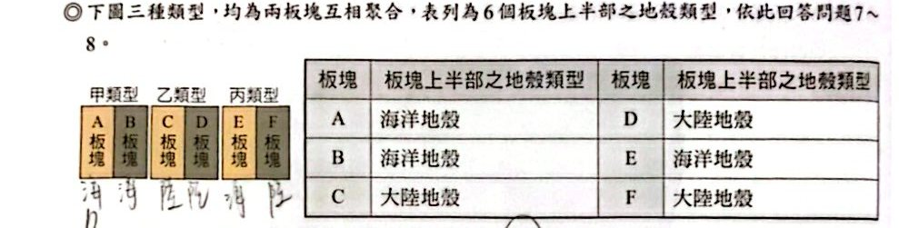
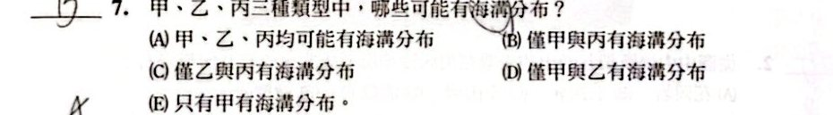
看答案與詳解收起
答(B) 僅甲與丙
解這題在考什麼：海溝＝兩板塊聚合時至少有一塊是海洋地殼（會隱沒）。
- 甲：海洋（A）─海洋（B）⇒ 有海溝。
- 乙：大陸（C）─大陸（D）⇒ 都不隱沒，造山帶，沒有海溝。
- 丙：海洋（E）─大陸（F）⇒ 有海溝。
- 所以僅甲與丙 ⇒ (B)。
看答案與詳解收起
答(A)
解這題在考什麼：甲＝海—海、乙＝陸—陸、丙＝海—陸。
- (A) ✗ 大規模造山運動發生在陸—陸碰撞（乙），不是甲。
- (B) ○ 大量褶皺—乙。
- (C) ○ 淺中深源地震帶—丙（有隱沒）。
- (D) ○ 火山島弧—甲（海—海隱沒）。
- (E) ○ 許多逆斷層—乙（碰撞擠壓）。
看答案與詳解收起
答(D) 183
解這題在考什麼：體積×密度＝質量，嚴謹地換單位。
- 山脈面積＝36000 × 47％ ＝ 16920 平方公里。
- 每年侵蝕 0.4 公分＝4×10⁻⁶ 公里 ⇒ 體積＝16920 × 4×10⁻⁶ ＝ 0.06768 立方公里。
- 1 立方公里＝10¹⁵ 立方公分 ⇒ 6.768×10¹³ cm³。
- 質量＝6.768×10¹³ × 2.7 ＝ 1.827×10¹⁴ 公克＝1.827×10⁸ 公噸 ≈ 183 百萬公噸 ⇒ (D)。
看答案與詳解收起
答(C) 錯動型板塊邊界，轉形斷層
解這題在考什麼：舊金山與洛杉磯分屬不同板塊，沿斷層線水平錯移、只有淺源地震、無火成活動 ⇒ 錯動型邊界；此斷層兩側是不同板塊 ⇒ 轉形斷層。
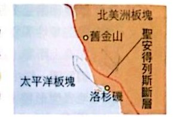
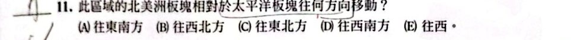
看答案與詳解收起
答(A) 往東南方
解這題在考什麼：相對運動——太平洋板塊相對於北美洲往西北，反過來北美洲板塊相對於太平洋板塊往東南。
- 聖安德列斯斷層是右移的轉形斷層：太平洋板塊相對北美洲板塊往西北移動 ⇒ 北美洲板塊相對於太平洋板塊往東南 ⇒ (A)。
看答案與詳解收起
答(C)
解這題在考什麼：GPS 兩點水平距離縮短 ⇒ 逆斷層（壓縮）。
- (A) ✗ 距離縮短 ⇒ 壓力作用，不是張力。
- (B) ✗ 本題判斷依據是 GPS 水平距離與斷層類型，圖中沒有「甲、乙均位於背斜」的依據。
- (C) ○ 水平距離縮短 ⇒ 逆斷層。
- (D) ✗ 逆斷層錯動時，上盤上升；震央在乙地（上盤）時，乙地應是相對上升。
- (E) ✗ 震央位於乙，離震央近的乙地受震波影響更強，乙地破壞通常比甲地強。
看答案與詳解收起
答(B)(E)
解這題在考什麼：相對運動——比較兩站箭頭的南北、東西分量（看長短與方向）。
- 花蓮（東側）的箭頭較長、朝西北；嘉義（西側）的箭頭較短。
- 南北方向：花蓮往北的分量較大 ⇒ 花蓮相對嘉義往北移動 ⇒ (B)。
- 東西方向：花蓮往西的分量較大 ⇒ 花蓮相對嘉義往西移動 ⇒ (E)。
- 即花蓮測站比嘉義測站更往北、更往西，所以兩者都滿足 B、E。
看答案與詳解收起
答(B)
解這題在考什麼：看圖計算與判斷：潛移＝緩慢、連續地錯動。
- 圖二：1998 年 8 月～2002 年 1 月（約 3.4 年），潛移量約 21 毫米 ⇒ 平均速率約 6 毫米／年。
- (A) ○ 曲線呈現階梯與緩升交替，速率有季節性變化（雨季較快）。
- (B) ✗ 平均約 6 毫米／年，不是 15 毫米／年。
- (C) ○ 乾季潛移量較雨季小。
- (D) ○ 2001 年雨季約潛移 6 毫米。
- (E) ○ 池上斷層位於縱谷，受擠壓，可能為逆斷層。
看答案與詳解收起
答(B) 甲 ＜ 乙
解這題在考什麼：時間尺度與量的比較：先估算，再比大小。
- 甲：2004 年南亞海嘯在印尼造成約 80 公分沉積物，約 200 年發生一次；一千年 ⇒ 1000 ÷ 200 ＝ 5 次 ⇒ 甲＝5 × 0.8 ＝ 4 公尺。
- 乙：右圖車籠埔斷層一千年內（距今、400 年前、980 年前）三次滑移，總滑移量約 9 公尺（圖中縱軸最高、累積到 9 公尺附近）。
- 甲 ＜ 乙 ⇒ (B)。
看答案與詳解收起
答(D)
解這題在考什麼：臺灣的兩個隱沒帶與震源深度。
- (A) ✗ 海溝是淺源，火山島弧處的震源較深，所以海溝的震源深度比島弧淺。
- (B) ✗ 臺灣南方是歐亞板塊往東隱沒到菲律賓海板塊之下（馬尼拉海溝），不是菲律賓海板塊往西隱沒。
- (C) ✗ 臺灣東北端是菲律賓海板塊往北隱沒到歐亞板塊之下，不是歐亞往南隱沒。
- (D) ○ 臺灣有兩個隱沒帶（琉球、馬尼拉），震源深度都可達約 200 km。
- (E) ✗ 從震源深度分布（班尼奧夫帶）可以確定臺灣位於聚合型邊界。
看答案與詳解收起
答(E)
解這題在考什麼：兩條海溝＋兩個隱沒方向都要正確。
- 西南：馬尼拉海溝——歐亞板塊往東隱沒到菲律賓海板塊之下；
- 東北：琉球海溝——菲律賓海板塊往北隱沒到歐亞板塊之下。
- 選項(B)(C) 標的是「呂宋火山島弧、琉球火山島弧」（那是火山弧，不是海溝）；(A)(D) 的板塊與隱沒的位置關係畫反；(E) 圖中海溝名稱、板塊名稱與隱沒方向都正確 ⇒ (E)。
看答案與詳解收起
答(B) 1160 公尺
解這題在考什麼：斷層面傾角 30°，利用直角三角形求深度。
- 由比例尺量得鑽探地點離斷層地表線的水平距離約 2 公里＝2000 公尺。
- 斷層面愈往東愈深，傾角 30° ⇒ 深度＝水平距離 × tan 30°＝2000 × (1／√3) ≈ 2000 ÷ 1.73 ≈ 1160 公尺。
- ⇒ (B)。
看答案與詳解收起
答(E)
解這題在考什麼：看圖判斷災害地震與板塊的關係。
- (A) ✗ 愈接近板塊邊界，地震不一定規模愈大。
- (B) ✗ 災害地震的發生也受震源深度、規模、地質條件影響，不是「愈靠近愈容易」；圖中大規模災害地震也分布在板塊內部。
- (C) ✗ 災害地震震央也出現在菲律賓海板塊。
- (D) ✗ 造成災害的地震並不是幾乎都由歐亞板塊隱沒造成（也有逆斷層、內陸斷層）。
- (E) ○ 花東縱谷是兩板塊縫合帶，也有機會形成災害地震（如 1951 年花蓮地震）。
混合題：地磁
看答案與詳解收起
答地核的外核
解這題在考什麼：地球磁場來自外核高溫流動的液態金屬（鐵、鎳）。
看答案與詳解收起
答(D)(E)
解這題在考什麼：讀圖：磁場強度顏色（紫／橘＝強、藍／綠＝弱）。
- (A) ○ 高緯度地區磁場平均值高於低緯度地區。
- (B) ○ 北半球的磁場平均值高於南半球（南半球有南大西洋異常區）。
- (C) ○ 磁場異常低的區域在南美洲及南美洲與非洲間的海域（南大西洋異常）。
- (D) ✗ 磁場最高處位於磁極附近（如西伯利亞、加拿大北部、南極洲附近），不是地理南極、地理北極。
- (E) ✗ 臺灣地磁強度約 4.5 萬 nT（圖中橘色），不是 2.7 萬 nT。
看答案與詳解收起
答(C)(D)
解這題在考什麼：地磁像保護罩，能偏折來自外太空的帶電粒子。
- 太陽風、宇宙射線都是帶電粒子流 ⇒ 磁場弱的區域，這些粒子容易直接干擾衛星。
- 紫外線、X 射線是電磁波（不帶電，不受磁場偏折）；隕石是大塊物質。
看答案與詳解收起
答(D)(E)
解這題在考什麼：閱讀文章，逐項核對。
- (A) ✗ 144±58 年是某次倒轉過程所需時間，不是倒轉的週期（倒轉沒有固定週期）。
- (B) ✗ 文章提到地磁極曾停留在低緯度長達 1000～2000 年，不只在兩極附近。
- (C) ✗ 研究團隊分析的是石筍中的碎屑磁性礦物，不是碳酸鈣。
- (D) ○ 鈾釷定年的極限是 10 個半衰期；石筍約 10 萬年，所以半衰期 ≥ 約 1 萬年。
- (E) ○ 文章：地磁倒轉前，地磁會先減弱，減弱到一定程度後才倒轉。